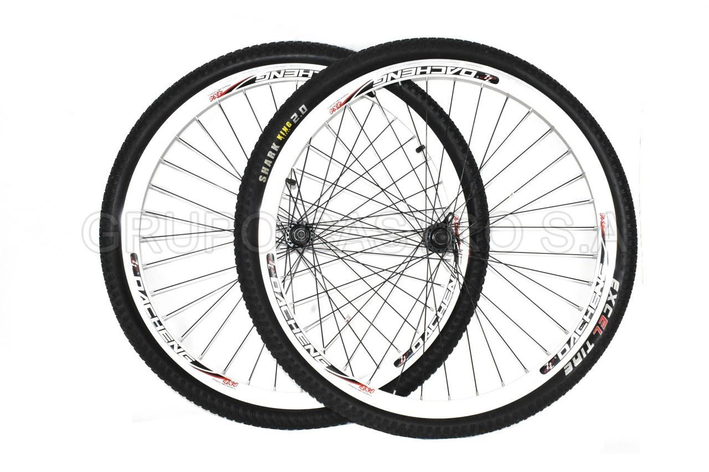
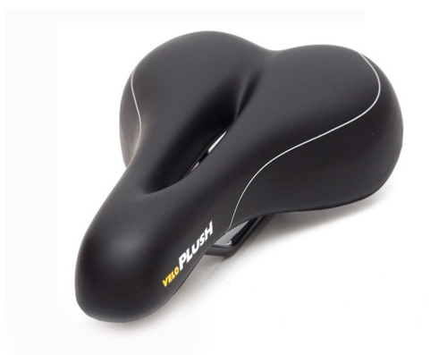

INICIO
VELOCIDAD

Rodado 28 doble pared. Ruedas diseñadas para garantizar agilidad y velocidad. Ver modelos
COMODIDAD

Asientos acolchados y antiporstáticos. Modelos de paseo con guardabarros y canastos. Ver modelos
FOMENTANDO EL USO DE LA BICICLETA
La ciudad de Rosario llegó a los 196 km de senderos exclusivos para bicicletas, que se reflejan como una alternativa real al tráfico y la contaminación vehicular generada por los transportes motorizados. Junto a una red de sociedades comprometidas con la sustentabilidad y sostenibilidad, apoyamos el uso de la bicicleta como medio de transporte, y no sólo como un elemento de uso recreativo.